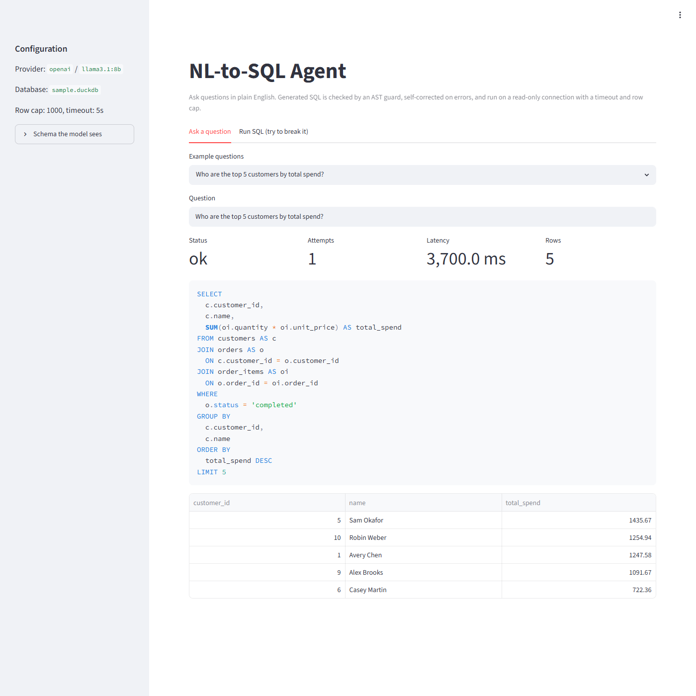

50%
faster visually-ready time for Office for the web
caching · prefetching · dynamic loading
Open to Senior & Tech Lead roles · Seattle · SF Bay Area · Remote
Backend & platform engineer at Microsoft with 12+ years of experience. I've spent 7+ years on Office for the web, building services that handle millions of users per hour. Now I'm applying the same discipline to LLM and AI infrastructure.
Impact
50%
faster visually-ready time for Office for the web
caching · prefetching · dynamic loading
4w → 4d
release cycle, with fewer regressions reaching users
canary rollouts · health gates · rollback
50%
faster SLA response across 5 Office apps
secure production debugging
91.7%
fewer LLM prompt tokens on a benchmark workload
compression · semantic caching · <1 ms p95
Office for the web (Word, Excel, PowerPoint, OneNote, Visio): backend performance, reliability, and developer infrastructure.
Ad-serving and data-pipeline engineering for a global ad platform.
Enterprise project-management software (SaaS and on-prem).
Projects
Both demos below run entirely in your browser. They're simplified JavaScript versions of the real Python projects, whose measured results are listed on each card.
LLM infrastructure · Python · FastAPI
A gateway between applications and any LLM. It trims irrelevant context, serves repeated and reworded questions from exact and semantic caches, and reports tokens saved and latency added on every request.
Try it: send requests through the gateway
Send a question, send it again, then send a reworded version, and watch which stage answers. The last example shares almost every word with the one before it, but where isn't when, so the gateway correctly refuses to reuse that answer.
AI agents · Python · DuckDB · sqlglot
Ask a database questions in plain English without letting an LLM run arbitrary SQL. An AST-based guard and a locked-down read-only engine form two independent safety layers. A self-correcting loop tries a deterministic fix before spending another model call.
Try it: can this SQL get past the guard?
The in-browser check is simplified. The real guard parses a full sqlglot AST, checks every table and column against the schema, and runs the re-rendered SQL on a read-only DuckDB connection.

Local AI · Voice
A fully local voice mock-interview system: an LLM interviewer that asks follow-ups and gives structured feedback. No paid APIs, and nothing leaves your machine.
View code ↗At work · Microsoft
An internal assistant that combines engineering knowledge sources with retrieval workflows and access-aware controls, so engineers get to root causes of recurring production issues faster.
At work · Microsoft
A way for engineers to debug live issues without exposing source maps publicly, built on Edge security features and adopted across Word, Excel, PowerPoint, OneNote, and Visio.
Skills
Pick a skill to highlight where I've used it on this page.
Also: C# · .NET · Java · TypeScript · Kubernetes · Docker · Azure Data Explorer (Kusto) · SQL · REST APIs · Azure DevOps · GitHub Actions
How I work
Every claim on this page has a number behind it. I start with SLIs, p95/p99 data, and a benchmark, then change the system.
Canaries, health gates, and rollback playbooks turn a scary monthly release into a routine one every few days.
Treat model output as untrusted input. Guardrails come before execution, and safety layers that don't depend on each other.
Design reviews, mentoring, and runbooks, so the whole team can keep the system healthy, not just me.
Education
M.S. Computer Science · 2017
B.E. Computer Engineering · 2012
Contact
I'm open to Senior and Tech Lead roles in backend, platform, and AI infrastructure, in Seattle, the SF Bay Area, or remote.
vivekpatilusc@gmail.com